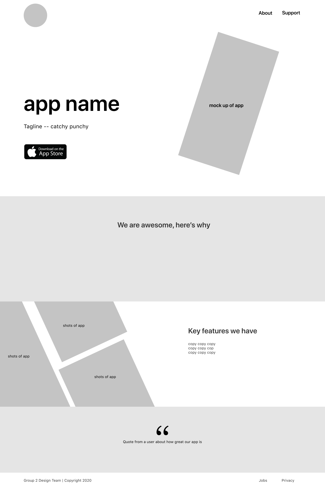

VoteReady
Voting is not only your civic duty, it’s your opportunity to impact your community and align it with your dreams.
Presidential election cycles drag out about 60% of voters, while off-year elections get an average of 40%1 and local elections, like those for city mayor, sometimes only get 6%!2 Why? Our team found that one path to increasing local turnout and voter empowerment was through simple and easily accessible information and a direct connection to local government.
the deets
Team of five
Duration: Two weeks | Oct 2020
Client: UC Berkeley UXUI Bootcamp
my role
UX Researcher
Interaction Designer
Front-End Developer

the problems.
- People feel like their vote doesn’t matter, politicians don’t care about them
- Engagement in local elections is low (20% less on average than when coinciding with presidential)
- People are overwhelmed by the amount of information, it’s hard to trust sources, decision fatigue sets in, and they’d rather not vote than make an uninformed decision
research.
In addition to competitor analysis, we conducted 12 interviews and put out a survey to gather information.
interviews | 12
66% avid voters
17% new voters
17% non-voters
58% liberal
17% conservative

Have time? Yes. Make time? No. Part of it is lack of connection to community.
survey | 67 responses

said they would attend a virtual town hall event

already fill out a mock ballot in preparation
From our research we created our user persona, Sarah McIntyre. We decided to focus on the path of the help seeker because we posited that creating a comforting, welcoming, trustworthy place for her would naturally engender empathy with a donor persona and drive them to contribute.
information architecture.
1 competitor analysis
No competitors provide:
- a candidate compare feature (an easy way to decide between two candidates)
- candidate interaction (a key factor in making your vote feel impactful)
2 problem analysis
Our team delved into iterating our problem statement and brainstorming a solution:
Sarah needs an app to find information on the upcoming election, research and compare candidates, make a decision and record it.
- How might we connect citizens to their local government?
- How might we allow citizens to feel more informed about local candidates and propositions?
3 feature determination
Our team spent a brainstorming session decided on featuers with out user in mind, and voted on what we could and should focus on.
See our "I like, I wish, what if?" chart
See our feature prioritization matrix
4 task and user flows
Q&A Flow
Ballot Cheat Sheet Flow
Before I start sketching, I detail the tasks a user needs to complete. These task flows lead to user flows, from which I can extract the screens I'll need to build. Working backwards from there can tell me the important frames I'll need in a homescreen or nav bar.
wireframing and prototyping.
sketched wireframes
Our team sketched both flows independently and then came together to pick the best parts of each persons’ sketches. Our homepages all had a similar feel, highlighting “voter readiness” as a primary motivation tool.
low fidelity wireframes
We focused on creating a connection between voters and candidates with a question and answer forum, live online townhall events and a candidate compare section.
testing. round 1 | 5 usability tests + 12 five-second tests
FAILED to complete the majority of tasks asked of them!
identified the app’s general purpose
While users could identify that our app was about voting, they did NOT understand our features or how to use them. Many of our icons were confusing and our pathways were not intuitive.
Hooray, failure!
iteration. round 1
Instead of trying to fix the problems with our first version, we decided to rethink the solution from the ground up. We realized we hadn’t spent enough time defining our task flows and organizing the structure, so we returned to brainstorming and started a new iteration with much more detail.
testing. round 2 | 5 usability tests
100% users were able to complete all tasks
80% struggled with sort icon
40% were unclear on meaning of star icon
This was a huge improvement from our first round. The app functioned and flowed fairly smoothly. But we still had some icon issues to address. At least we were headed in the right direction now, and were confident enough in the structure that I created a lo-fi design system to keep momentum while we defined our style guide.
iteration. round 2
Now that our core architecture was functioning, we added color and texture. While we had solved some of our icon issues, we had also created new ones, so we focused on clarity with our use of icons.
high fidelity wireframes
testing. round 3 | 6 usability tests
clicked one or more other places before going to the Forum to find more information

iOS users understood all icons! (among our testers, one user was only familiar with the Material Designs share icon)
Key Insight: While users could tell us the app was about voting, they could not identify the core features quickly. Introducing this information outside of onboarding could help users feel more confident when browsing through the app.
iteration. round 3
My solution to assisting users with understanding our app's key functions was adding explanatory cards to the homepage, brainstorming that as you use sections of the app, these cards will transform, showing your progress.
high fidelity mobile prototype
coding the landing page.
We also planned a responsive webpage where you can learn about the app and download it.
I began by mocking up and then coding a lo-fi wireframe. Once the style guide was defined I added typography, color and our textured background to the landing page. And finally, I tailored it to look great on any screen.
draft
final
conclusion and next steps.
the results
next steps
- A/B testing on the home screen
- More cohesive connection between Info Guide and Forum
what we learned
Detachment from your designs
When we iterated from our first to second version we scrapped our whole prototype and started new to avoid falling to the same traps. I had thought of using a picker for a comparison chart and was disappointed when it didn’t work, but the important part of a new idea is discovering whether people understand it.
Icons
They’re not universal. Choose carefully, test and use words for clarity. We struggled throughout this sprint on finding the right icons, and made mistakes along the way that just reminded us of user mental models and how different they can be from our own.
The End
Full case study available upon request